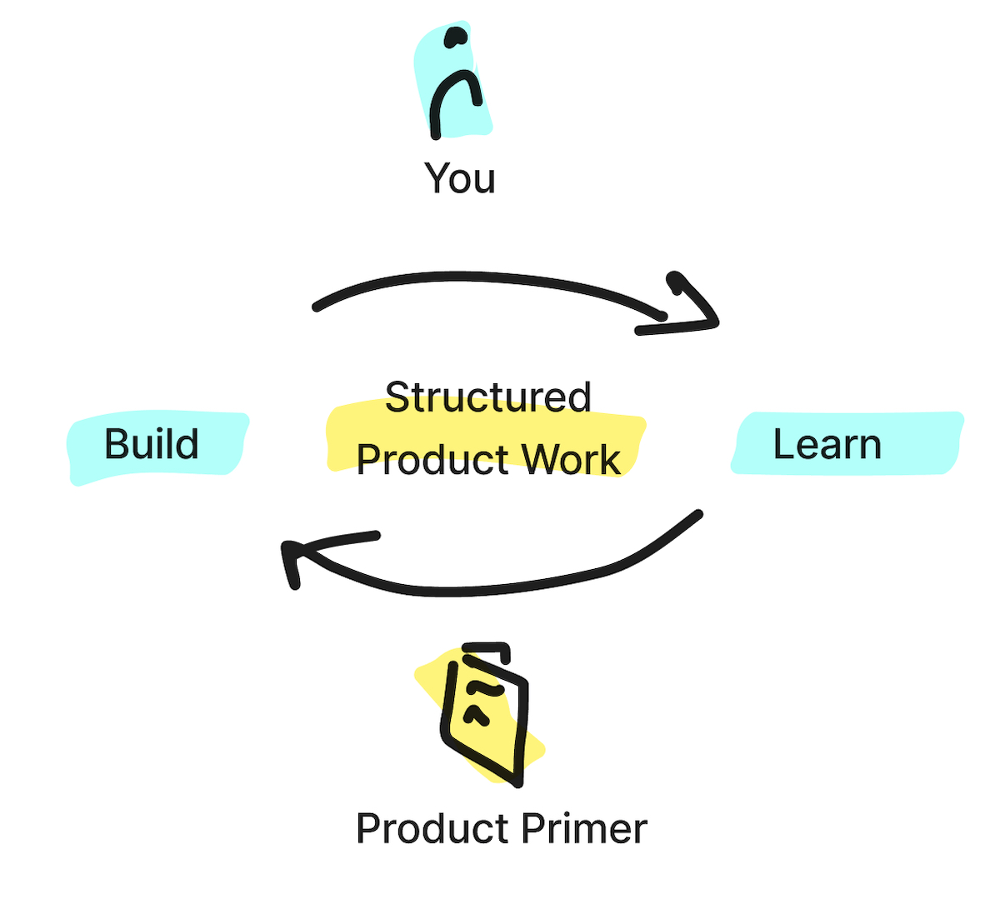

Summary
Rinse and Repeat
Embrace the routine
In everything you do, you get better by doing and iterating as you go.
Focus as much of your thinking and brain power into your product building efforts and learning how your product performs and succeeds.
Set up clear frameworks and processes so you don't need to re-invent the wheel whenever you need to evaluate your
product's purpose, assess your strategical focus areas or think what to build next. And do all of these activties on a regular basis.

Now, go and build a great product. And enjoy the ride.
- Set your product's purpose. As market evolves, re-evaluate your products purpose.
- Define a strategy on how to deliver a meaningful product. Keep your strategy constantly fresh.
- Understand your users needs and focus your solutions on outcomes. Keep on a constant dialogue with your users.